HERE WE CELEBRATE AND MEDITATE MONDAY-SATURDAY (6-9AM) INCLUDING LIGHT BREAKFAST AND SUNDAY (6-3PM) INCLUDING BREAKFAST , LUNCH , CELEBRATION . ADDRESS - Durga Chamber, Ugf, 103, RDC, Raj Nagar, Ghaziabad, Uttar Pradesh 201002
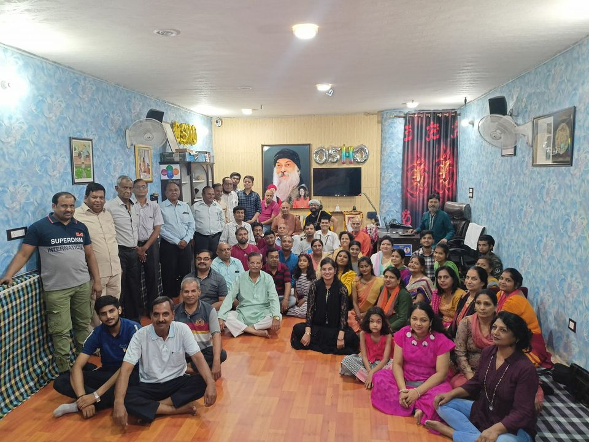
BELOVED SADGURU OSHO
Osho was born in Kuchwada, M.P. on 11th December, 1931. His parents Swami Devateertha Bharti and Ma Amrit Saraswati became his disciples in later years. He was enlightened at the age of 21 years on March 21, 1953, while he was studying philosophy at D.N. Jain College in Jabalpur. In 1956 Osho did M.A. from the University of Sagar with First Class Honors in Philosophy. He joined Sanskrit College, Raipur in 1957.
...
He was appointed Professor of Philosophy at the University of Jabalpur, in 1958, where He taught until 1966. During this period He traveled widely in India speaking to large audiences and challenging orthodox religious leaders in public debates.
After nine years of teaching, He left the university in 1966 for regular spiritual work. He started conducting intense ten-day meditation and Samadhi camps. At times He addressed gatherings of 20000 to 50000 people.
In July, 1970, He moved to Mumbai. By this time He came to be known as Bhagwan Shree Rajneesh. He started initiating seekers into Neo-Sannyas, which did not involve renouncing the world. This was a great revolutionary step since sannyas in all other traditions requires renunciation.
In 1974 He moved to Poona Ashram, where He gave 90 minutes discourses nearly every morning, alternating every month between Hindi and English. He spoke on Yoga, Zen, Taoism, Tantra and Sufism covering masters like Gautam Buddha, Jesus, Lao Tzu, and other mystics. These discourses have been collected into over 300 volumes and translated into 20 languages. In the evenings, during these years, He gave Energy darshan and sannyas. And while explaining the sannyas names He unraveled many secrets of divine sound, divine light, and other dimensions of spiritualism. These evening talks are compiled in 64 darshan diaries of which 40 are published.
In March 1981, He moved to USA, where His disciples raised city of Rajneeshpuram from the ruins of the central Oregonian high desert. In October 1984 Osho ended His three and half years of self-imposed silence, and started speaking to small groups of people. In July 1985 He resumed His public discourses each morning to thousands of seekers gathered in a two-acre meditation hall.
During 1985 - 1986 He undertook a World Tour and visited many countries including Nepal, Greece, Uruguay, Jamaica and Portugal. In all, 21 countries denied Him entry or deported Him after arrival. On July 29,1986, He returned to Mumbai, India and shifted to the ashram in Poona, India, in January, 1987. During January-February 1989 He stopped using the name "Bhagwan," retaining only the name Rajneesh. Later He adopted ‘Osho’ as His new name. On 19th January 1990 Osho left His body.
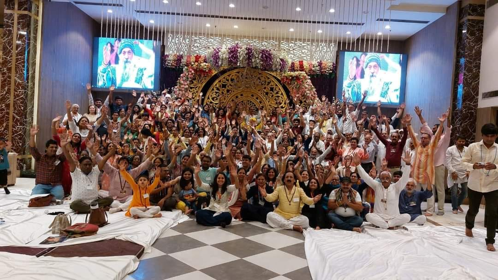
CELEBRATION OF SADGURU MAA AMRIT PRIYA'S BIRTHDAY
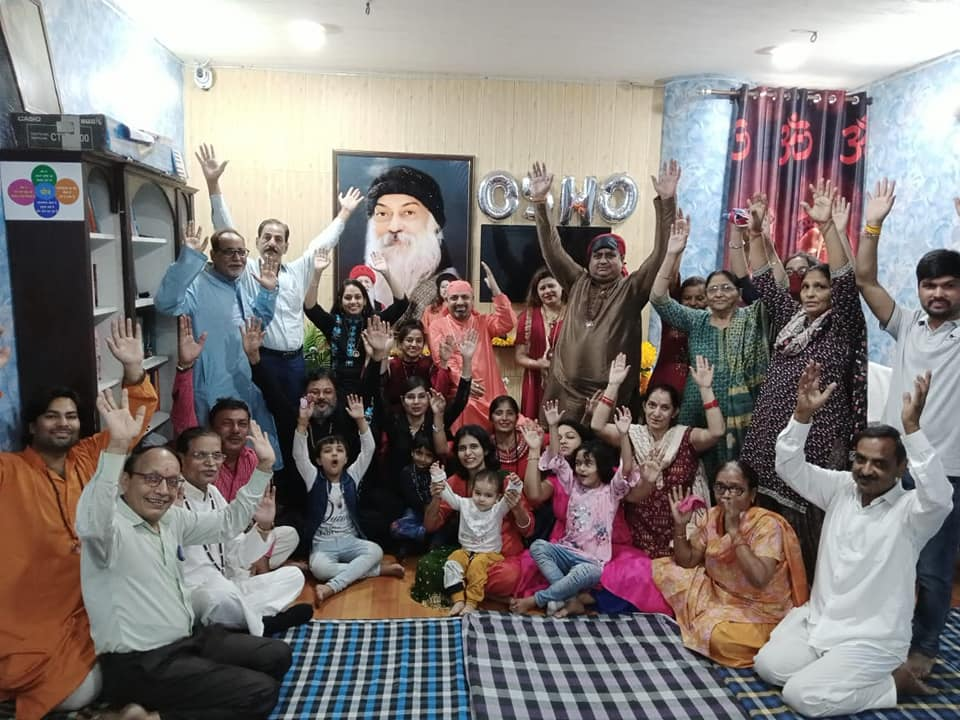
3 DAYS MEDITATION CAMP
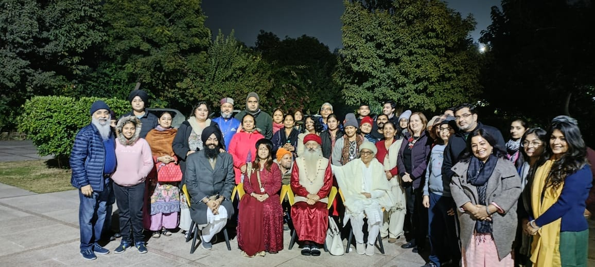
WINTER SPECIAL "BHAJAN AND MEDITATION"
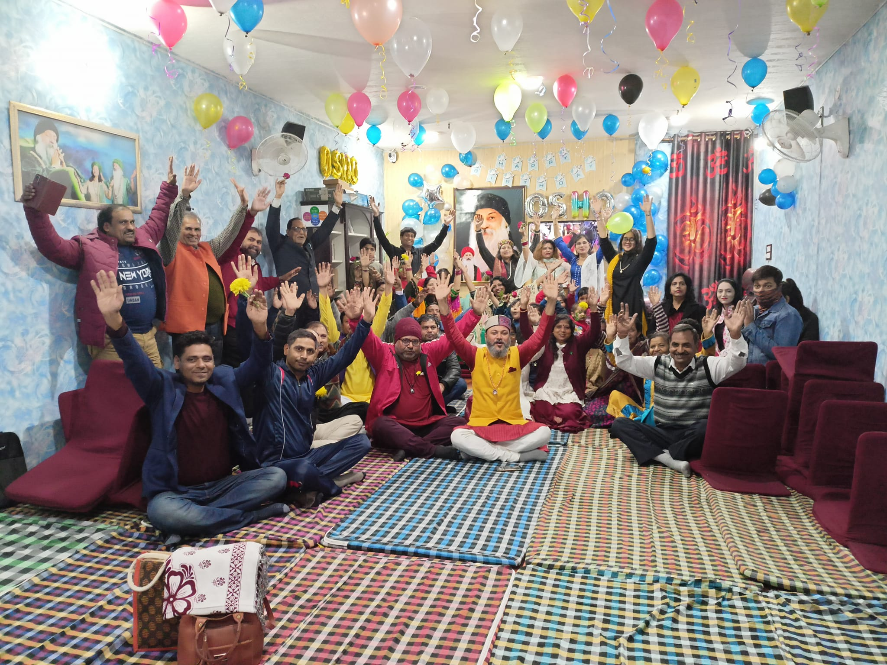
OSHO BIRTHDAY SPECIAL CELEBRATION AND MEDITATION
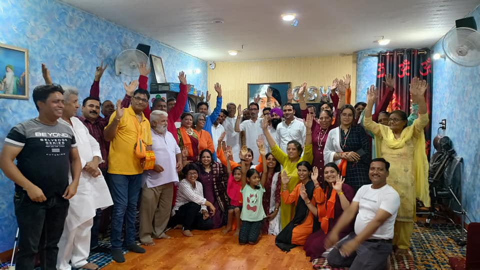
3 DAY MEDITATION CAMP IN RAJ NAGAR
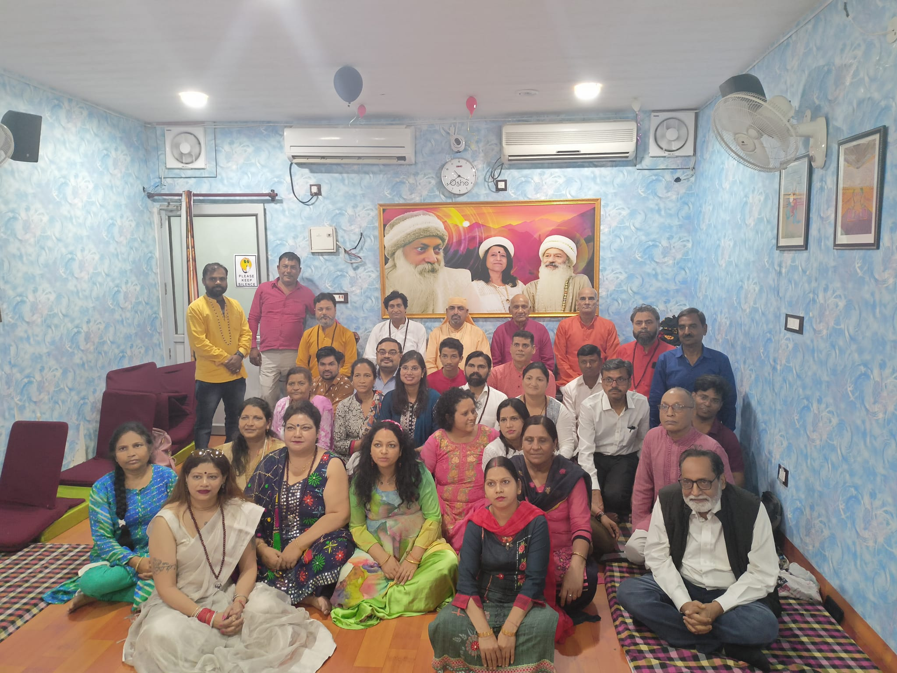
SUNDAY MEDITATION ONE DAY CAMP
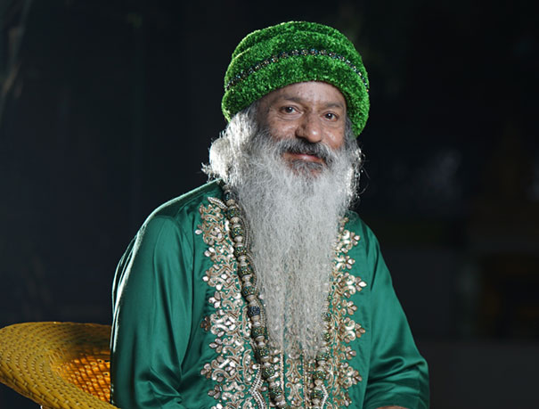
SWAMI SHAILENDRA SARASWATI
Swamiji was born on 17 June 1955 in Gadarwara (M.P.) as the fifth brother of Osho. Joined the Nav Sanyas movement in 1971. In 1973, he was a university topper in Sagar University. MBBS from Jabalpur Medical College in 1979. He did and married Ma Amrit Priya ji in the same year. Then served his services in the hospital of Shri Rajneesh Ashram, Poona till 1981. Lived in Rajneeshpuram till 1985. Thereafter Birla's O.P.M. Worked as Medical Officer in Hospital. In the last days of Osho stayed again in Poona.
Swamiji has translated and edited Osho literature. Started conducting meditation camps, public discourses, quizzes and giving interviews to the media from 1998. Since then, apart from India and Nepal, he has been working continuously in foreign countries as well.
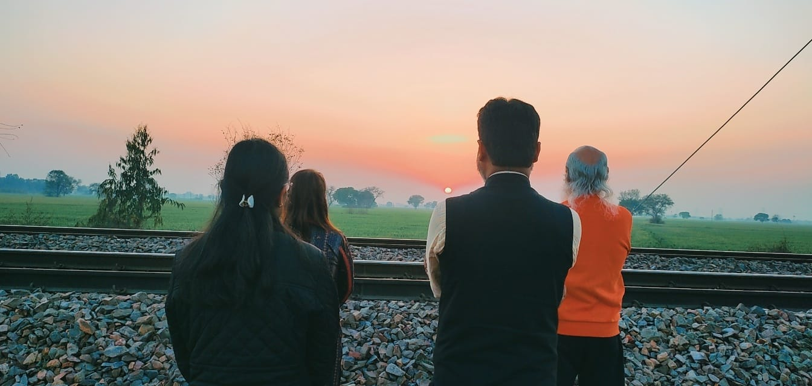
OUR BEST MOVEMENT WITH SADGURU "EVENING WALK AND WATCHING SUN SET"
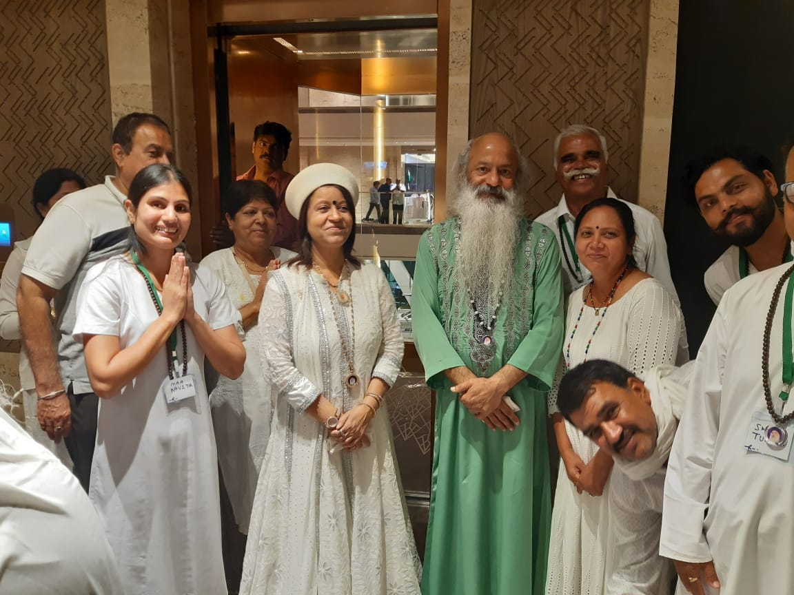
ULHASNAGAR MEDITATION CAMP
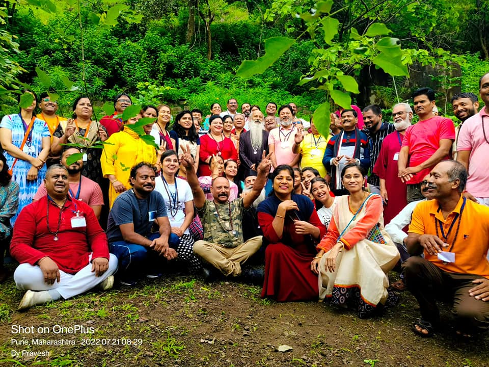
SAMARTHGARH MEDITATION CAMP WITH MAA AND BABA
MAA AMRIT PRIYA
Ma Amrit Priya was born on 8th May, 1958. She is the youngest child with three elder brothers. The seeds of spiritualism were sown in her through her parents. Being born & brought up in the milieu of religiousness, the seeds of spiritualism took roots since an early age. She joined Osho's-Neo-Sannyas movement in 1973. She did her M. A. in Philosophy and Prabhakar in Music in 1979. She married Swami Shailendra in 1979. She lived in the Osho Commune in Pune during 1978-81.
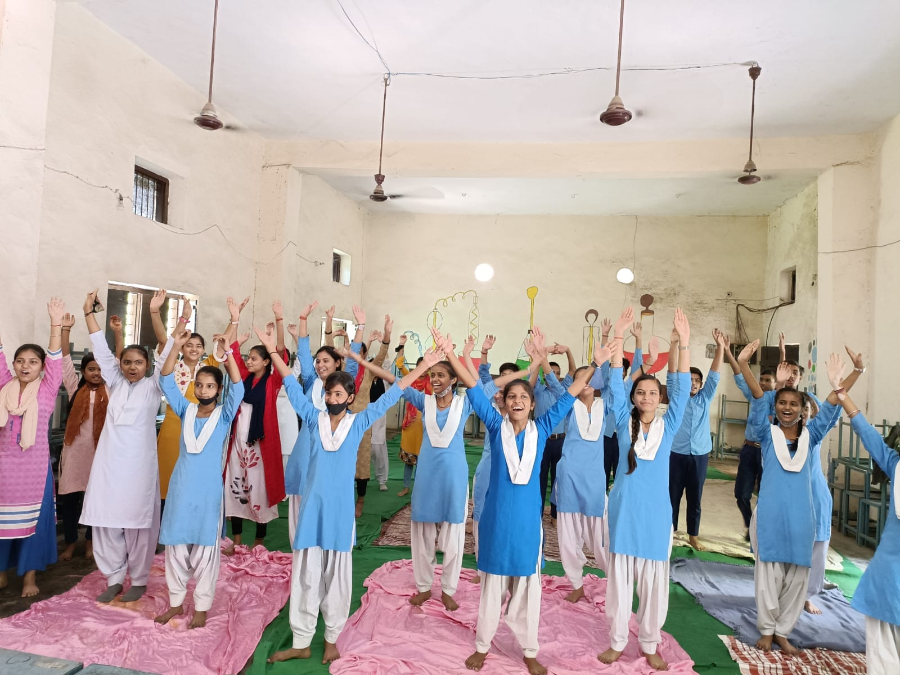
MEDITATION CAMP IN SCHOOL
MEDITATION CAMP WITH OUR FELLOWS
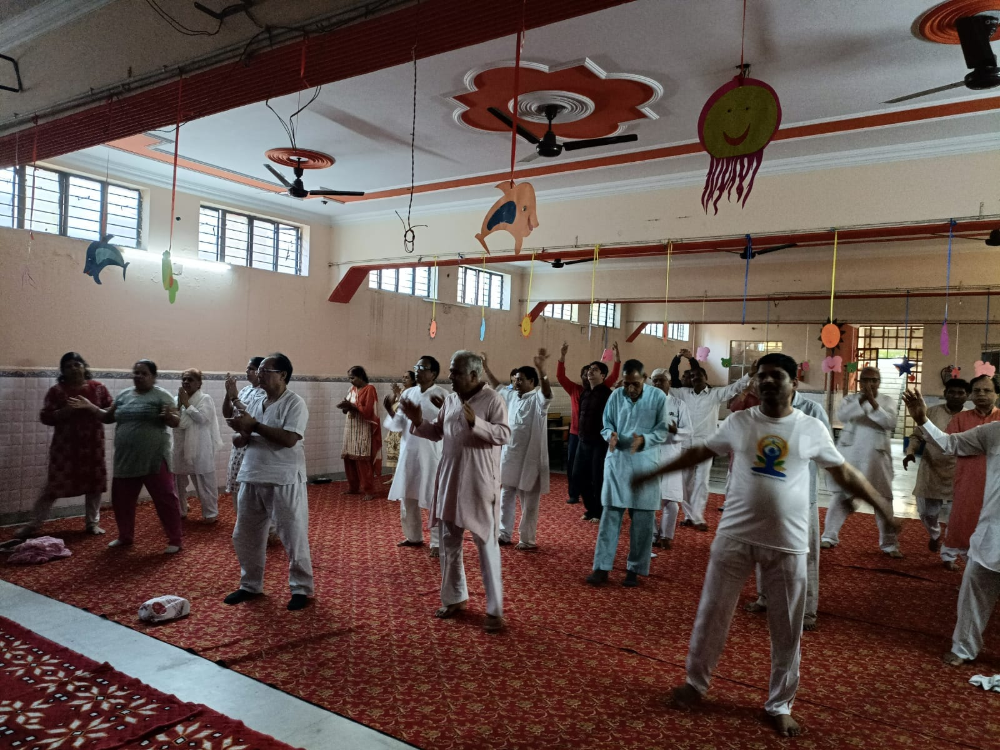
MEDITATION CAMP IN YOGA CENTRE
OUR TEAM
It is generally a team of four people and We are here to sow the seed of meditation. We have come to connect you with meditation.
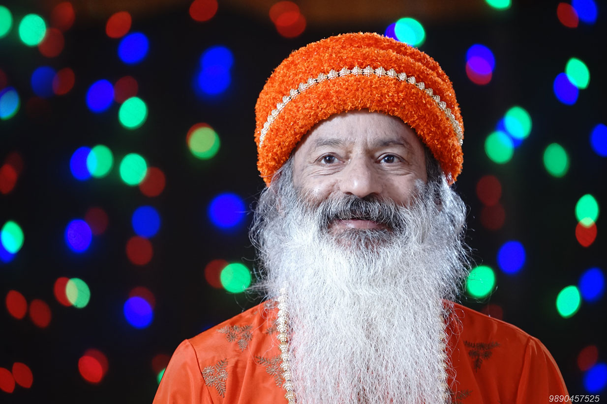
SWAMI SHAILENDRA SARASWATI
OSHO FRAGRENCE
A Disciple by mission To spread OSHO's Message and Vision.
MA AMRIT PRIYA
OSHO FRAGANCE
A Guide, A Follower, A Exemplar..
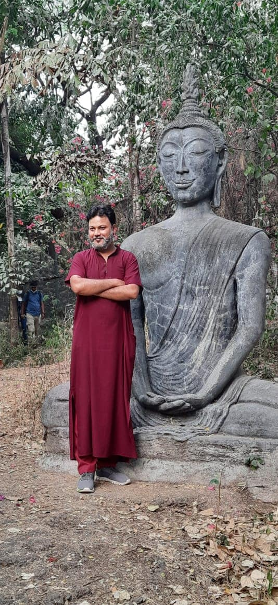
SWAMI ABHAY ANAND
OSHO MEDIATION CENTRE GHAZIABAD
Spread meditationwith blissfullness
MA PREM KAVITA
OSHO MEDIATION CENTRE GHAZIABAD
A Well-wisher , Here to spread love
QUOTE'S
"Life in itself is an empty canvas, it becomes whatsoever you paint on it. You can paint misery, you can paint bliss. This freedom is your glory.".
"Loneliness is a state when you are ill with yourself, bored with yourself, tired of yourself, and you want to go somewhere and to forget yourself into somebody else."